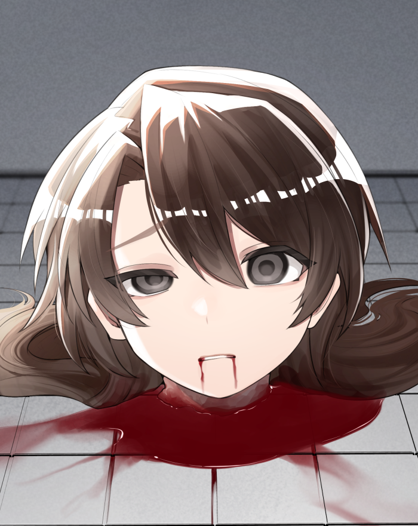
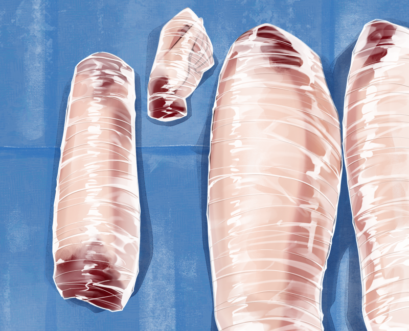
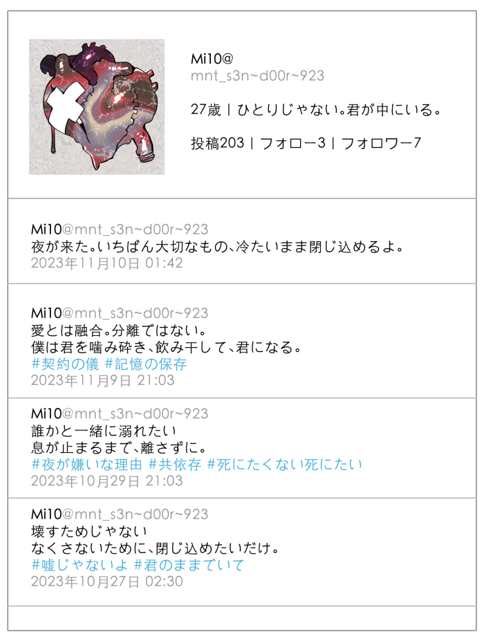
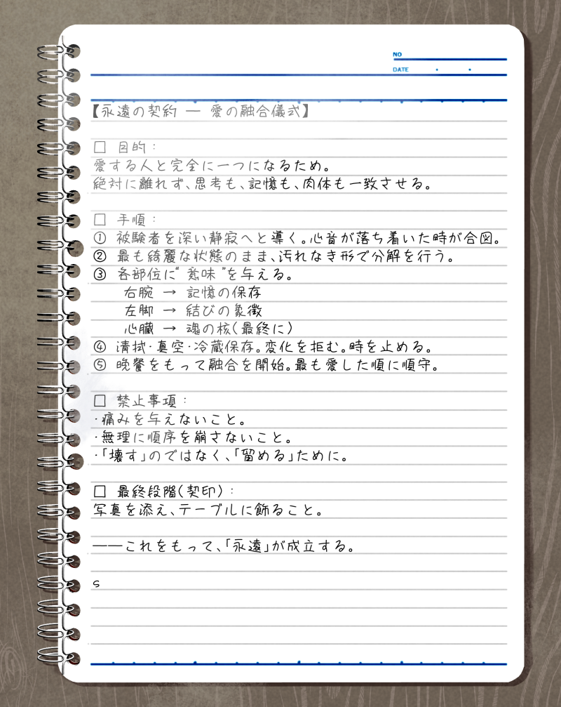
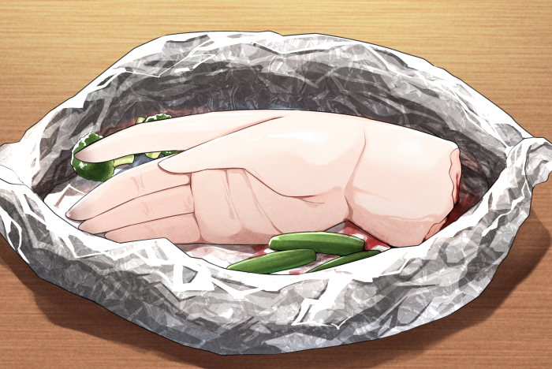
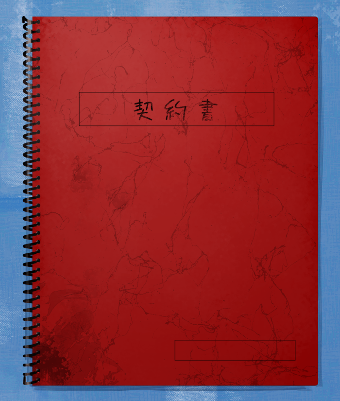
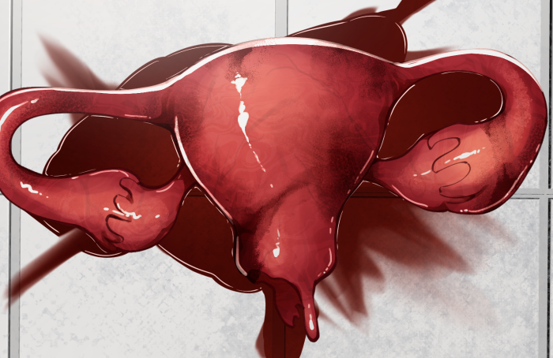
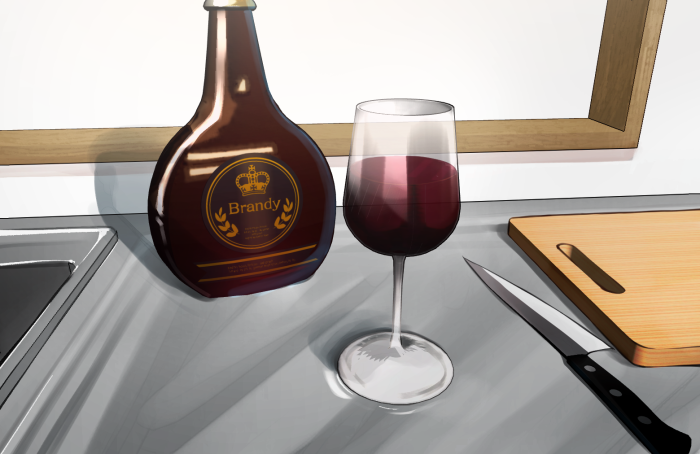

田園調布冷蔵庫食人事件
概要
田園調布冷蔵庫食人事件（でんえんちょうふれいぞうこしょくじんじけん）は、2023年11月に東京都大田区田園調布で発覚した殺人・死体損壊・食人事件である。加害者である27歳男性・千堂湊（せんどう みなと）が、 SNSを通じて知り合った20代女性を自宅に招き入れ、殺害後に遺体を解体・冷蔵保存・一部を調理して食していたことが発覚した。
被害者は発見時、既に頭部・四肢が切断された状態で、肉体の一部が冷蔵庫および冷凍庫に保管されていた。警察の捜査により、犯人は一連の行為を「永遠の愛の契約を結ぶための儀式」と認識していたことが判明し、国内外で大きな衝撃を呼んだ。


事件の経緯
接触までの経緯
加害者の千堂湊は、事件発覚前からメンタル系SNSコミュニティで活動しており、自傷経験や孤独をテーマにしたポエム的投稿を多く行っていた。 被害者女性（22歳・大学生）とは、匿名投稿掲示板をきっかけに知り合い、共通の精神的空虚感を共有する中で、「理解者になりたい」「消えたくなる気持ちを分け合いたい」といったやりとりを交わしていた。
事件の1ヶ月前から、被害者は頻繁に千堂の自宅を訪問していたことが近隣の監視カメラ映像などから確認されている。

「夜が来た。いちばん大切なもの、冷たいまま閉じ込めるよ。」
「愛とは融合。分離ではない。僕は君を噛み砕き、飲み干して、君になる。」
「誰かと一緒に溺れたい。息が止まるまで、離さずに。」
「壊すためじゃない。なくさないために、閉じ込めたいだけ。」
事件直前〜事件直後の発言。事件日直後に食人を示唆するような発言を投稿している。
犯行の詳細
2023年11月3日、被害者が千堂宅を訪れたことを最後に消息を絶った。後の捜査により、この日を境に被害者は薬物（睡眠薬）で昏睡状態にされた後、首を絞められて死亡したとされる。死亡確認後、千堂は自宅浴室にて被害者を計画的に解体した。
彼の供述によると、解体は「契約の儀」と呼ばれた一連の儀式に従って行われた。 この儀式には以下のような“手順”があったとされる：
* 頭部（記憶）は最初に切断し、冷蔵庫内のガラスケースに収め「最も近くに置く」
* 右手（愛の証）は調理して最初の晩餐に使用
* 心臓（永遠の繋がり）は「食事の最後に食すべき」として冷凍保管
* 内臓の一部は捨てられず、全てラベルを貼り記録されていた（「マナ（仮名）の肝臓／Day1」など）
この異常な行動について、千堂は「彼女は自分の中で生きている」「愛の完全な形は一体化だ」と語っていた。


発覚と逮捕
事件が発覚したのは11月12日。被害者の家族が行方不明届を提出し、最後に訪れた住所として千堂の部屋が特定された。警察が任意で訪問した際、室内に漂う異臭と不審な冷蔵庫の構造（改造痕、施錠）により強制捜査が行われた。
冷蔵庫内からは複数の真空パックに包まれた肉片や臓器が発見され、うちDNA鑑定により被害者のものであると断定された。室内からは「契約書」と記されたノートが発見され、そこには被害者との関係性、感情の変遷、解体手順、食事の記録などが詳細に綴られていた。



千堂湊について
千堂は都内の美術系大学を中退後、約5年間引きこもり状態にあった。ネットを通じて他者とコミュニケーションをとる一方で、過去の失恋経験や母親との関係性に執着していた痕跡が複数確認されている。
彼のSNSには「この世界に永遠なんてないなら、俺が作る」「愛は“保存”できるかもしれない」といった投稿が数多く残されており、孤独と歪んだ救済願望が犯行動機に繋がったとされる。
精神鑑定では一部で解離性人格障害の可能性も示唆されたが、責任能力は認められる方向で進んでいる。
社会的反応
事件発覚直後からメディアは「SNS依存と孤独」「ネット上の精神共鳴の危険性」などを特集し、多数の識者やコメンテーターが討論を繰り広げた。特に冷蔵庫での遺体保管・調理・食人という極めて異常な要素が海外でも報道され、「日本版ダーマー」と呼ばれることもあった。
一部では「被害者も自傷や病み投稿をしていた」という点が取り上げられ、SNS上での被害者バッシングも起こったが、同時に「それを狙った巧妙な加害者による誘導だった」と反論する動きもあり、議論は今も続いている。